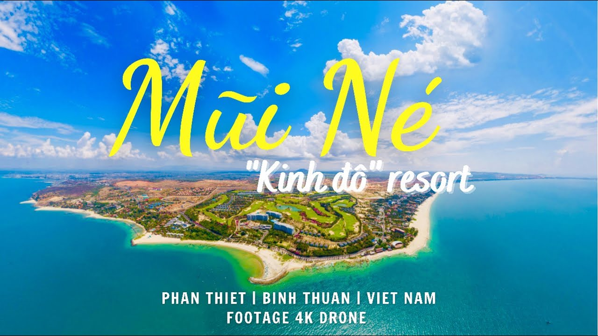

Mũi Né - Bình Thuận
Mũi Né là một trong những điểm đến du lịch biển nổi tiếng nhất Việt Nam, thuộc thành phố Phan Thiết, tỉnh Bình Thuận. Nơi đây nổi bật với bãi biển dài, cát trắng, nắng vàng và là thiên đường nghỉ dưỡng lý tưởng quanh năm.
Với những đồi cát trải dài, làng chài truyền thống và hoạt động thể thao biển sôi động, Mũi Né thu hút hàng triệu du khách trong và ngoài nước mỗi năm.
Bối cảnh lịch sử
Mũi Né ban đầu là một làng chài yên bình, sau này phát triển mạnh mẽ thành khu du lịch biển nổi bật từ những năm 1995 khi nhật thực toàn phần thu hút nhiều người đến quan sát. Kể từ đó, nơi đây được đầu tư và trở thành “thủ đô resort” của Việt Nam.

Đặc điểm nổi bật
- Biển trong xanh, khí hậu nắng ấm quanh năm
- Đồi cát bay – địa điểm check-in nổi bật và chơi trượt cát
- Làng chài truyền thống – nơi trải nghiệm văn hóa địa phương
- Suối Tiên – dòng suối nhỏ uốn quanh đồi cát đỏ tuyệt đẹp
- Ẩm thực biển phong phú: mực một nắng, bánh quai vạc, lẩu thả
Gợi ý lịch trình
Ngày 1: Tham quan bãi biển Mũi Né, tắm biển, nghỉ dưỡng tại resort
Ngày 2: Khám phá đồi cát bay, Suối Tiên, trải nghiệm trượt cát
Ngày 3: Ghé thăm làng chài, mua hải sản tươi sống, tham quan Tháp Chăm Poshanư